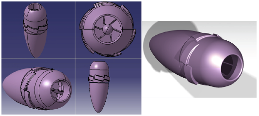
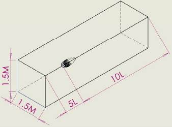
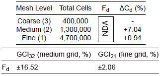
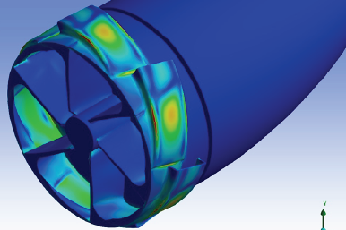
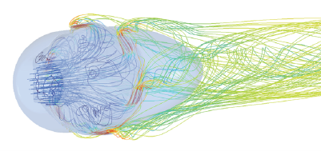

1. A Novel Bladeless Turbine Concept
This group project investigated a novel enclosed hydrokinetic turbine that generates torque through jet reaction at tangentially oriented nozzle exits, rather than conventional blade loading. The concept combines the jet-reaction simplicity of the Hero engine and Segner wheel with a radial-outflow architecture, offering a scarcely documented approach to tidal and riverine energy conversion.
The project combined physical tow-tank testing with steady-state CFD and one-way coupled FSI analysis to establish a foundational experimental and computational dataset for a device whose performance characteristics had not previously been documented in the open literature.

2. Rebuilding the Geometry from Scratch
The project began with only a coarse STL representation of the physical prototype — unsuitable for direct meshing or any future design modification. I was responsible for reconstructing the entire turbine geometry as a clean, parametric CAD model in CATIA V5, the only team member with the surface-modelling expertise to do so.
Using generative shape design, 3D sketching, surface construction, and boolean operations, the key features — axial inlet, internal guide vane passages, and tangential nozzles — were recreated from scratch to be simulation-ready.
A parametric approach was adopted throughout: critical dimensions such as inlet/outlet diameters, nozzle angle, and guide vane geometry were defined through dimensional relationships rather than fixed values, allowing rapid modification for future sensitivity studies and optimisation without rebuilding the model.
3. Tow-Tank Testing & Rig Design
The prototype was tested in Cranfield's ocean tank, towed at speeds from 1.4 to 2.6 m/s while mounted beneath a floating platform. Torque, rotational speed, and drag were measured simultaneously across multiple load conditions, producing a complete performance map for the turbine.
I contributed to the design and fabrication of the rig attachment and instrumentation housing — including clamshell collars, a modular multi-layer housing for the torque sensor and generator, and mounting for the rectifier, wattmeter, and camera — all 3D-printed in ABS and PLA with gyroid infill for structural performance.

4. Steady-State CFD Analysis
A steady-state RANS CFD model was developed using the reconstructed CAD geometry, with the k-ω SST turbulence model resolving the viscous sublayer directly (targeting \(y^+ \approx 1\)) rather than relying on wall functions.
Two domain configurations were simulated — a towing-tank replica and an extended open-water domain — to quantify the effect of blockage on predicted drag and wake behaviour, informing whether experimental measurements required correction before use as deployment predictions.
The CFD model was validated against experimental drag measurements, confirming its ability to predict the turbine's hydrodynamic loading and providing confidence in its use for future design work.
5. Uncertainty Quantification & Blockage Analysis
I led the uncertainty quantification and blockage analysis for the CFD study, ensuring the numerical results were rigorously verified before being used for design decisions.
Mesh independence & GCI: A three-grid convergence study (coarse, medium, fine) was performed on drag force, following the ASME Journal of Fluids Engineering procedure and Roache's GCI framework. The asymptotic range ratio confirmed all grids lay within the asymptotic range, validating the use of Richardson extrapolation.
Blockage correction: A blockage sensitivity study compared the towing-tank domain against an extended open-water domain, quantifying the drag inflation due to confinement. An analytical blockage correction (Werle's method) was derived and applied to assess whether tow-tank measurements required adjustment before use as open-water predictions.
Convergence verification: Convergence was assessed using multiple indicators — residuals, mass conservation, and force monitoring — rather than residuals alone, ensuring the solution was genuinely converged for engineering purposes.


6. One-Way Coupled FSI Structural Analysis
To assess structural viability under operational loading, a one-way coupled fluid-structure interaction (FSI) analysis was performed, transferring hydrodynamic loads from the CFD solution to a structural finite element model.
Materials compared: Three candidate materials were evaluated — ABS-CF (carbon fibre-reinforced ABS, baseline for 3D printing feasibility), GFRP, and CFRP — under identical geometry, boundary conditions, and loading.
Model setup: The FEA model included gravity and hydrostatic pressure loads alongside the CFD-derived hydrodynamic loading, with a fixed support representing the shaft constraint. Mesh independence was verified through a separate GCI study on deformation.
Outcome: All three materials remained within elastic limits under operational loading, with peak stress concentrations identified at the nozzle entrance. This confirmed the turbine as structurally viable and highlighted ABS-CF as a promising candidate for future 3D-printed tidal turbine applications.
7. Outcome & Legacy
This project established the baseline CFD methodology, parametric CAD model, uncertainty quantification framework, and experimental dataset that directly enabled the later MSc thesis work — extending the steady, non-rotating analysis into a full transient rotating study with MRF, sliding mesh, and 1DOF dynamic mesh formulations.
The parametric CAD model and rigorous verification approach proved invaluable: they allowed rapid geometry iteration and confidence in the numerical results throughout the follow-on work, demonstrating the value of investing in a clean, simulation-ready model and thorough uncertainty quantification from the outset.

Full Technical Document
Interested in the Full Report?
The full group project report may be shared under a non-disclosure agreement, subject to agreement from all parties involved.
Contact for Access